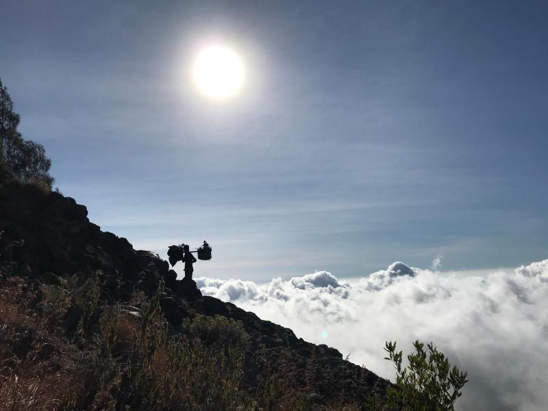
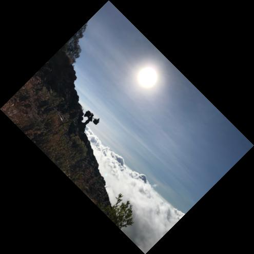
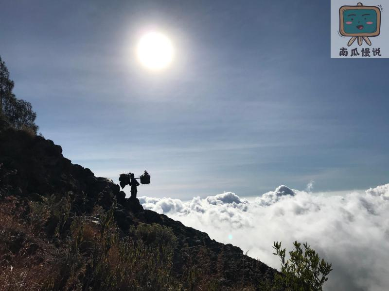
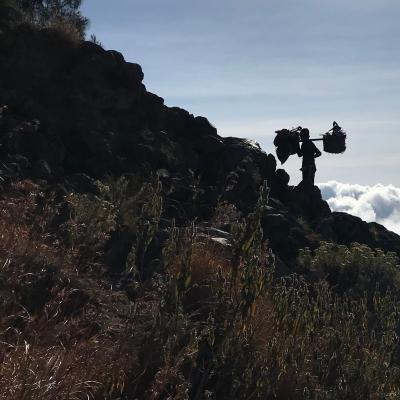
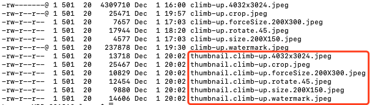

原文连接:https://www.cnblogs.com/larrydpk/p/11967694.html
1 需求
表哥需要给儿子报名考试，系统要求上传不超过30KB的图片，而现在的手机随手一拍就是几MB的，怎么弄一个才30KB的图片呢？
一个简单的办法是在电脑上把图片缩小，然后截屏小图片，但现在的电脑屏幕分辨率很高，而且截屏大小不好控制；同样分辨率在不同图片格式下，大小也相差很大。试了一下微信截图工具，输出的图片比较大。于是放弃了该办法。
另一个办法是通过其它工具来处理。找了图片在线压缩网站和一款手机软件，发现在图片小于一定大小时压缩无效。如果再继续找其它工具，简直就是折腾且浪费时间，所以也放弃了该办法。
最后，还是自己写个代码把图片按原比例压缩成了29KB，使用Thumbnailator库，两三行代码搞定。
2 缩略图可以做什么？
缩略图是应用极其广泛的，像头像、图片消息、商品图片等，都会用到缩略图。
比如，当你有了一个新的微信好友，你就能看到他的头像，一开始这个头像是一个比原图更小的缩略图。而你点击查看原图时，微信客户端才会给你下载原图。因为你并不会对每个人的头像都感兴趣，都会去查看清晰的原图，一个小小的缩略图已经能满足了。这样可以减轻网络传输的负担，加快响应速度。
微信传图片和视频也是同样的道理，先给你传一个比较小的预览，你点击查看原图或视频播放才给你传更大的文件。
3 缩略图的开源库
缩略图的开源库很多：
（1）Thumbnailator
GitHub：https://github.com/coobird/thumbnailator
不依赖外部库，轻便高效，任何平台适用，支持缩放、旋转、截取，支持水印。
（2）Imgscalr
GitHub：https://github.com/rkalla/imgscalr
全部基于 Java 2D，不依赖外部库，轻便高效，任何平台适用，支持缩放、旋转、截取，不支持水印。
本文主要讲解Thumbnailator的使用，最新版本为0.4.8，maven引入如下：
<dependency>
<groupId>net.coobird</groupId>
<artifactId>thumbnailator</artifactId>
<version>0.4.8</version>
</dependency>4 常用操作
4.1 指定大小缩放
原图为4:3比例的图片，为4032x3024（图片太大，网站无法上传原图），如下：

当使用指定大小方式进行缩放时，默认是保持原比例的。
//参数小且比例与原比例一样
//则按参数输出结果
Thumbnails.of(originalPic)
.size(400, 300)
.toFile(picturePath + "climb-up.size.400X300.jpeg");
//参数大且比例不等
//则按比例放大，取最小的值
Thumbnails.of(originalPic)
.size(4400, 3400)
.toFile(picturePath + "climb-up.size.4400X3300.jpeg");
//参数小且比例不等
//则按比例缩小，取最小的值
Thumbnails.of(originalPic)
.size(200, 300)
.toFile(picturePath + "climb-up.size.200X150.jpeg");
//不保持比例
//则按参数输出结果
Thumbnails.of(originalPic)
.size(200, 300)
.keepAspectRatio(false)
.toFile(picturePath + "climb-up.size.notKeepRatio.200X300.jpeg");
//强制设置大小
//则按参数输出结果，与上个例子一样
Thumbnails.of(originalPic)
.forceSize(200, 300)
.toFile(picturePath + "climb-up.forceSize.200X300.jpeg");展示其中两种结果：
（1）size(200, 300)，结果为200X150的图片，比例还是4:3。
（2）forceSize(200, 300)，结果为200X300的图片，如原比例不同，会有变形。
4.2 按比例进行缩放
按比例进行缩放是指按宽和高的比例同时缩放，看下面代码：
//比例小于1，缩小
//宽和高同时缩小为原来的0.1倍
Thumbnails.of(originalPic)
.scale(0.1f)
.toFile(picturePath + "climb-up.scale.403X302.jpeg");
//比例大于1，放大
//宽和高同时放大为原来的1.1倍
Thumbnails.of(originalPic)
.scale(1.1f)
.toFile(picturePath + "climb-up.scale.4435X3326.jpeg");4.3 按角度旋转
按角度旋转时，角度为正数时，顺时针；角度为负数时，逆时针。代码如下：
Thumbnails.of(originalPic)
.size(400,300)
.rotate(45)
.toFile(picturePath + "climb-up.rotate.45.jpeg");压缩并旋转后的结果图片如下所示：

4.4 添加水印
添加水印也是十分方便，我们示例将水印放在右上角，代码如下：
Thumbnails.of(originalPic)
.size(2000,1500)
.watermark(Positions.TOP_RIGHT, ImageIO.read(
new File(picturePath + "pkslow.size.400X300.jpeg")), 0.5f)
.toFile(picturePath + "climb-up.watermark.jpeg");加上水印后的图片如下：

4.5 裁剪
代码如下：
Thumbnails.of(originalPic)
.sourceRegion(Positions.TOP_RIGHT, 1800, 1800)
.size(400, 400)
.toFile(picturePath + "climb-up.crop.jpeg");结果如下：

4.6 目录下的文件批量操作
这个功能还是非常有用，可以操作目录下的所有图片，并指定文件名输出，如指定前缀，代码如下：
Thumbnails.of(new File("/pictures/201912/").listFiles())
.size(400, 400)
.toFiles(Rename.PREFIX_DOT_THUMBNAIL);操作后的生成的结果如下：

5 总结
Thumbnailator库操作方便，支持缩放、旋转、裁剪、水印等功能，而且没有其它依赖，值得了解学习。
欢迎关注公众号<南瓜慢说>，将持续为你更新...

多读书，多分享；多写作，多整理。